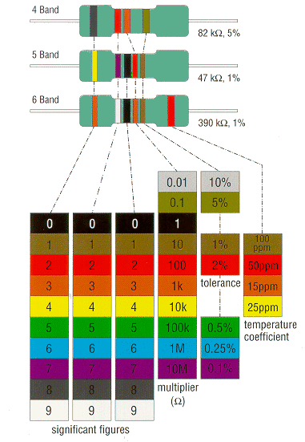

| RESISTORS |
PREFERRED VALUES
It would not be practical to make resistors of every value, so a system of preferred values is used. This system sets
a fixed number of values in each decade of resistance, each value being an increase over the previous value by an
approximately constant percentage. For example, if the values in the first decade of a preferred value series are 10, 22,
and 47 ohms then the values in the next decade would be 100, 220, and 470 ohms, for the decade after 1K, 2k2, and 4k7 ohms
and so on. The two most common preferred values series, the E12 and E24, are shown below:
E12 series, 12 values per decade:
1.0, 1.2, 1.5, 1.8, 2.2, 2.7, 3.3, 3.9, 4.7, 5.6, 6.8, 8.2
E24 series, 24 values per decade:
1.0, 1.1, 1.2, 1.3, 1.5, 1.6, 1.8, 2.0, 2.2, 2.4, 2.7, 3.0
3.3, 3.6, 3.9, 4.3, 4.7, 5.1, 5.6, 6.2, 6.8, 7.5, 8.2, 9.1
COLOUR CODE
Resistors are usually marked with several coloured bands. This is a colour code and it shows
the resistor's value, tolerance, and sometimes temperature coefficient. The COLOUR CODE FOR
4, 5, and 6 BAND RESISTORS is shown below:
